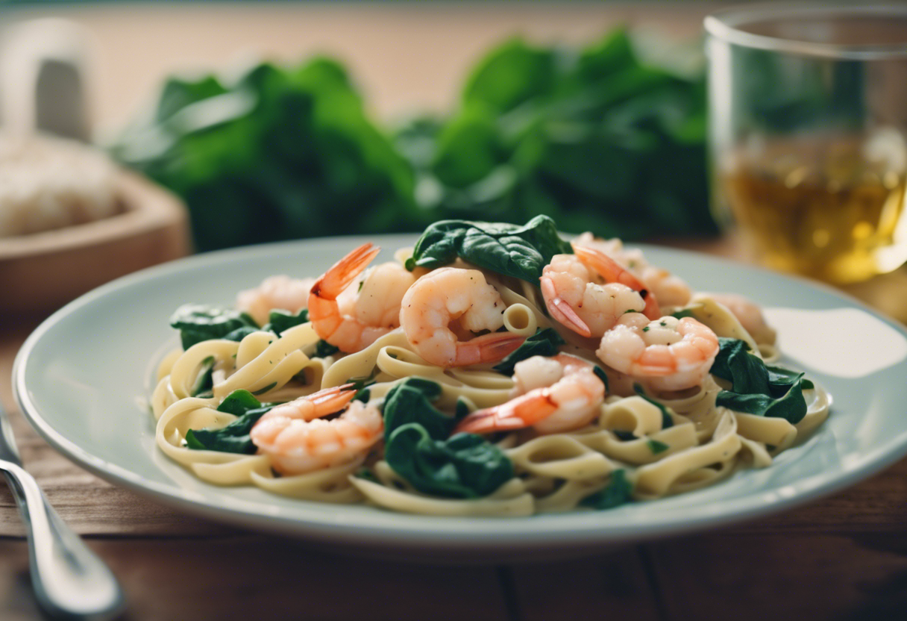

Shrimp Pasta

Description
A tasty garlicky pasta that is quick and easy to make. Delicious and perfect for any weeknight.
Ingredients
- 250 g frozen shrimps, peeled
- 200 g dried spaghetti or fettucini
- 5 cloves of garlic
- 2 dried red chillies
- 400 g baby spinach
- 1/2 cup of white wine
- 1 tbs olive oil
- 1 tbs butter
- salt to taste
- black pepper to taste
- juice of half a lemon
- Cook the pasta according to the package instructions.
- Heat the olive oil and the butter in medium heat. Add the chopped garlic and chillies and cook for about 2 minutes.
- Add the shrimps and stir. When well combined, pour the white wine, the salt and pepper and cover the pan for about 2 minutes or until it starts to simmer. Uncover the pan and let the wine evaporate.
- Add the spinach and let them wilt. Rectify the salt and add the lemon juice. Mix with the cooked pasta and it is ready to serve!